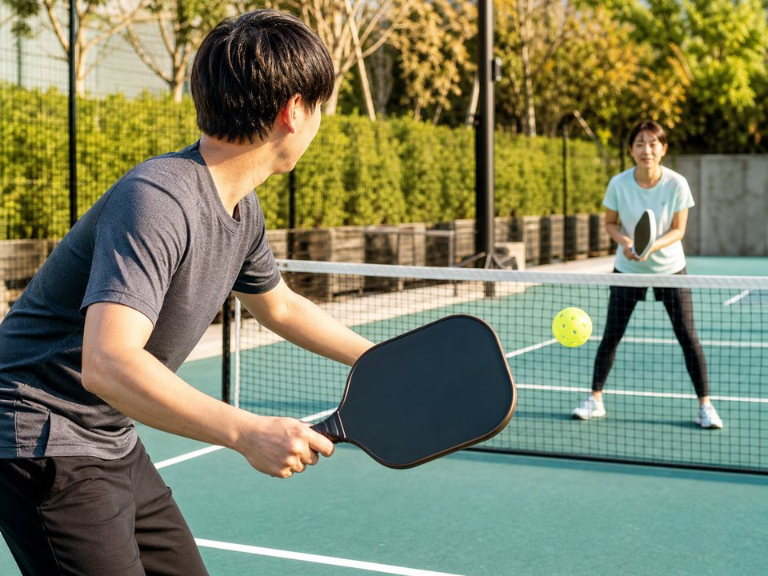

1. 動きやすい服
Tシャツとハーフパンツなど、腕を振れて足を曲げやすい服。特別なユニフォームは必要ありません。
Pickleball starter guide
初回の体験なら、動きやすい服・コートに合う靴・飲み物・タオルが基本。パドルとボールは、会場で借りられるか確認してから買うのが失敗しにくい順番です。

競技の基本とコート寸法は日本ピックルボール協会「ピックルボールとは」および公式ルール案内を参照。国内では2026年4月に競技団体が統合し、6月に日本スポーツ協会の承認団体となるなど制度整備も進んでいます。
Tシャツとハーフパンツなど、腕を振れて足を曲げやすい服。特別なユニフォームは必要ありません。
体育館なら床を傷つけない室内履き、屋外ならコート用など、予約ページの指定を確認します。
短いラリーでも動き続けます。季節と会場環境に合わせて用意します。
初心者体験会では貸し出しがある場合があります。無料か有料か、予約時に確認してください。
パドルは重さ、面の形、グリップの太さで扱いやすさが変わります。最初から口コミ1位を買うより、体験会の貸出品で「振り遅れない・握りにくくない」を確かめる方が確実です。
| 確認点 | 選び方 | 注意 |
|---|---|---|
| 重さ | 数分振っても操作が遅れず、手首だけで支え続けない物 | 軽ければ必ず楽、重ければ必ず強いとは限らない |
| グリップ | 強く握り込まずに持てる太さ・長さ | オーバーグリップで太さは調整できる |
| 形 | 最初は当てやすさを比較し、面の長さだけで決めない | 細長い形状は取り回しも変わる |
| 公認 | 大会を目指すなら、購入時点の承認リストを照合 | 似た名称・旧モデル・模造品に注意 |
公式戦を視野に入れる場合は、商品ページの「公認」表記だけで決めず、型番をUSA Pickleballの承認パドル一覧など最新リストと照合します。参加大会が指定する認証基準を優先してください。
ピックルボールは穴の開いたプラスチックボールを使います。屋内用と屋外用では穴の数・大きさや硬さなどが異なり、風や床への対応が変わります。最初は会場指定または備品のボールを使い、自分で購入するときは次を確認します。
ランニングシューズは前へ進む動きを重視した物が多い一方、ピックルボールは横移動、急停止、切り返しが多い競技です。継続するならテニスやピックルボール向けなど、横方向の安定性があるコートシューズを検討します。
INDOOR
ノンマーキングなど施設指定を確認。靴底のほこりを落とし、滑りにくさを保ちます。
OUTDOOR
路面に合う耐久性とグリップを確認。つま先が強く当たらないサイズを選びます。
USA PickleballのHealth & Safety Hubでも、横方向を支えるコートシューズと保護アイウェアが案内されています。眼鏡・アイガードも必要性を検討してください。
広告
楽天市場の商品検索APIから、4,000〜16,000円・レビュー5件以上のオールコート用テニスシューズを抽出し、レビュー件数が多い順に掲載しています。ピックルボール専用品ではないため、実際に使うコートと施設の規定を確認してください。
価格・在庫・評価は変動します。価格とレビューは2026年8月22日取得時の楽天市場の集計値であり、当サイトの実測・使用評価ではありません。
 取得時価格：9,900円（税込・送料込）
楽天市場のレビュー：★4.57（14件）
楽天市場で最新情報を見る
取得時価格：9,900円（税込・送料込）
楽天市場のレビュー：★4.57（14件）
楽天市場で最新情報を見る
 取得時価格：6,336円（税込・送料別）
楽天市場のレビュー：★4.40（10件）
楽天市場で最新情報を見る
取得時価格：6,336円（税込・送料別）
楽天市場のレビュー：★4.40（10件）
楽天市場で最新情報を見る
参加料、パドル・ボール・シューズの貸出を確認。
重さとグリップの違いを記録する。
会場指定と横移動の安定性を優先。
予算と大会予定に合う1本を選ぶ。
体験料とレンタル料は施設差が大きいため、「初心者セット」を先に買うより、近隣の体験会を1回予約して必要総額を確認する方が無駄を抑えられます。
動きやすい服、会場に合う室内用またはコート用シューズ、飲み物、タオルが基本です。パドルとボールのレンタル有無を予約前に確認します。
価格幅が広いため、まず借りて重さとグリップを確認するのがおすすめです。継続を決めてから予算と大会参加の有無に合わせます。
単発体験では施設へ確認してください。継続するなら横方向を支えやすいコートシューズを検討します。
用具の認証・大会規定は更新されます。購入前に参加予定大会の最新要項と承認リストを確認してください。